Портьеры и тюль
Подбираем плотность, посадку и оттенок ткани под дневной свет комнаты, отшиваем и навешиваем шторы на месте
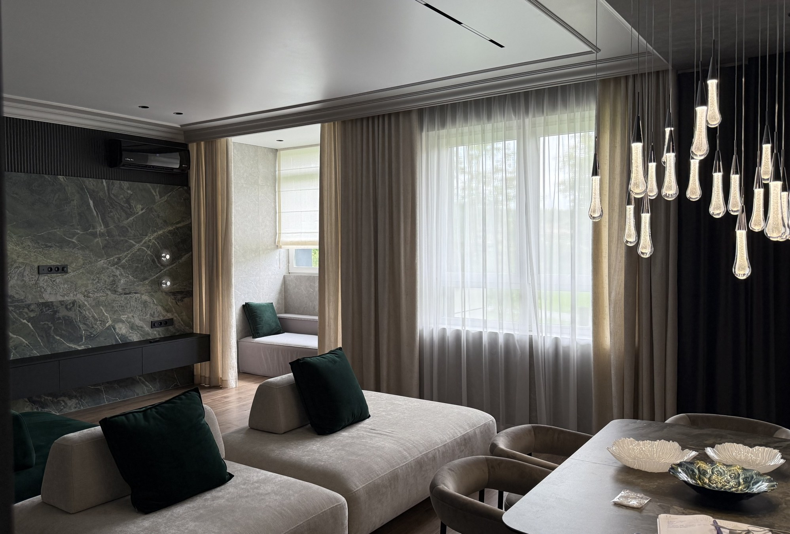
Приедем на объект с каталогами тканей, снимем точные замеры под ваши карнизы и сошьём комплект для квартиры или дома
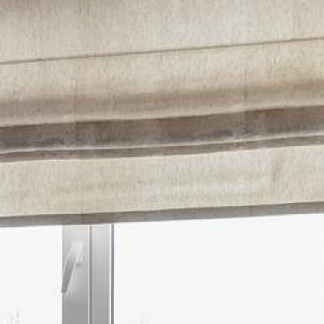
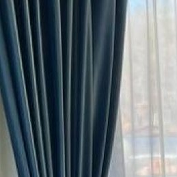
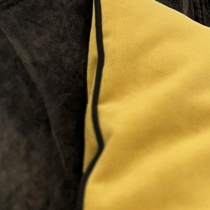

Оформляем окна и интерьеры под ключ: от замеров на объекте до развески готовых штор и подбора домашнего текстиля
Подбираем плотность, посадку и оттенок ткани под дневной свет комнаты, отшиваем и навешиваем шторы на месте
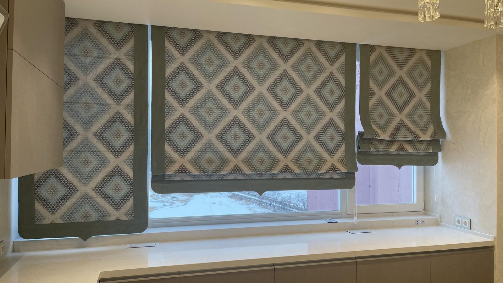
Точные замеры, подбор механизмов и аккуратная установка солнцезащитных систем на любые окна
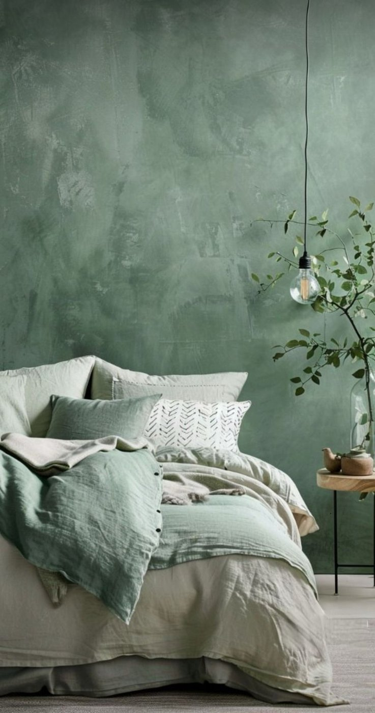
Комплекты из варёного хлопка и тенселя по вашим размерам, покрывала и декоративные подушки
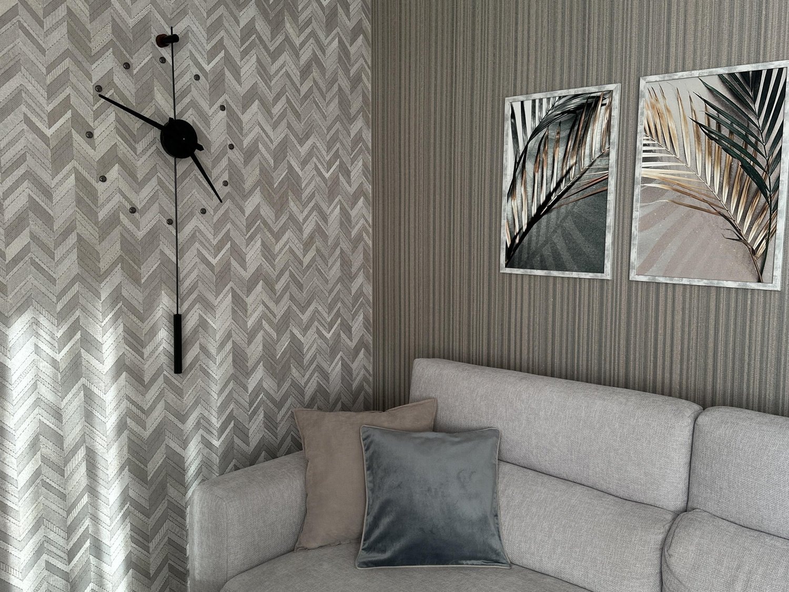
Помогаем собрать комнату целиком, чтобы стены, шторы и текстиль сочетались по фактуре и тону
Реальные квартиры и дома в Находке и Приморском крае, для которых мы подбирали ткани, шили шторы и делали установку
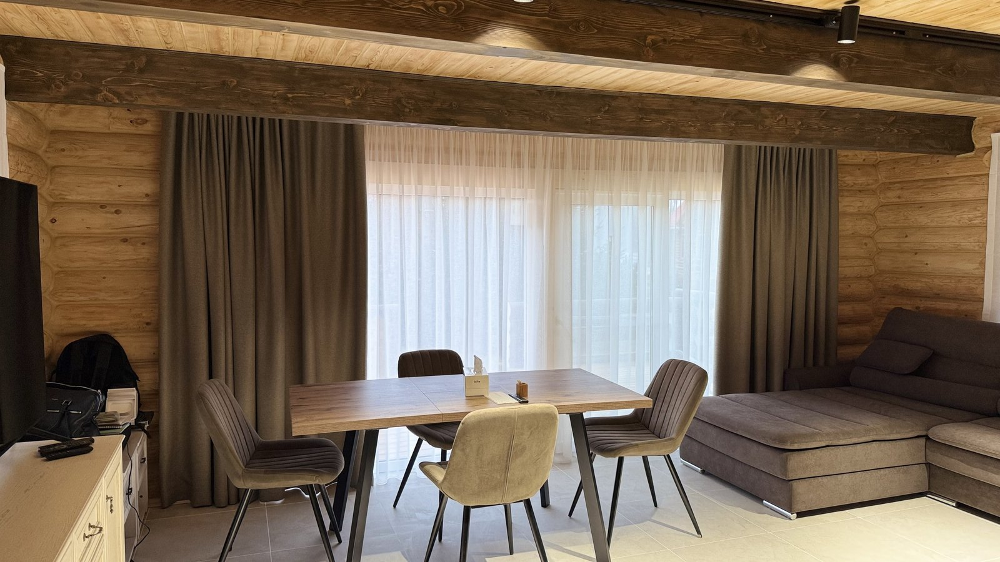
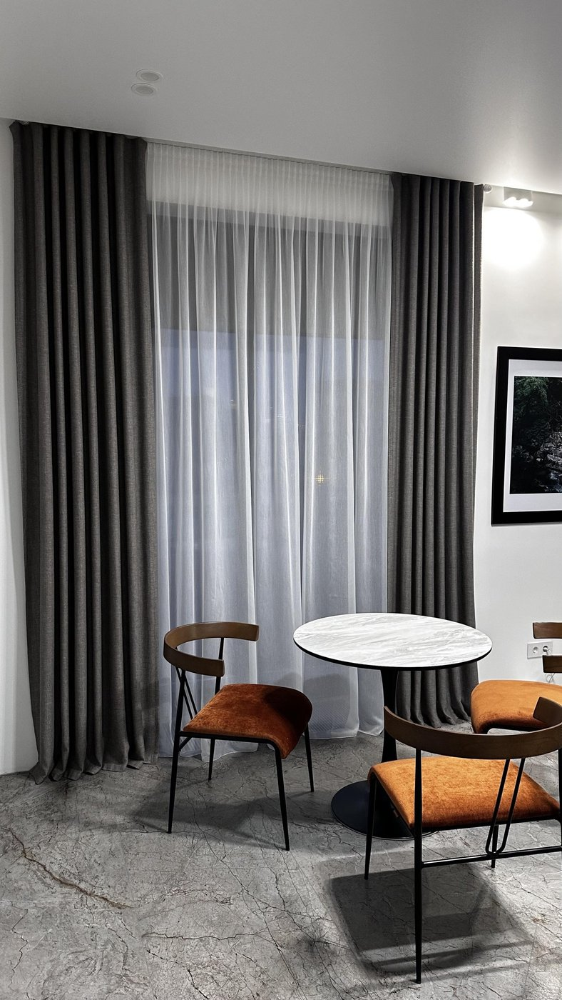
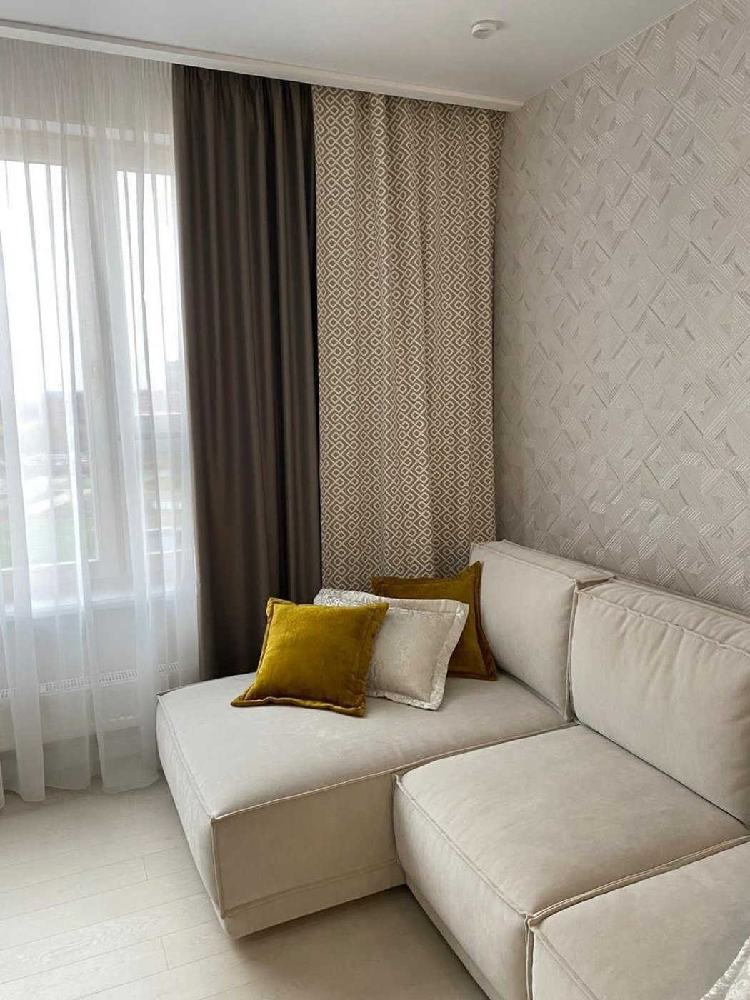
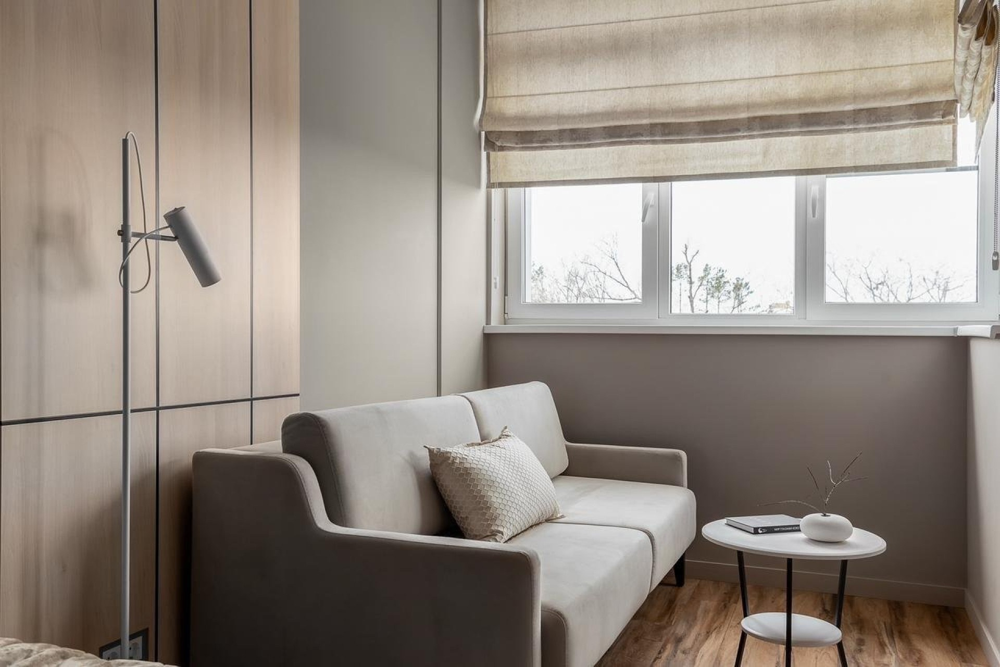


Берём на себя замеры, расчёт ткани и монтаж, чтобы шторы точно подошли к вашим карнизам и освещению комнаты
Обсуждаем ваши комнаты, пожелания по свету и стилю и договариваемся об удобном времени визита
Привозим ткани прямо в квартиру, прикладываем к стенам и мебели, учитываем уже установленные карнизы и натяжной потолок
Рассчитываем точный расход, отшиваем портьеры, тюль, римские шторы или постельное бельё с ровными швами и посадкой
Монтируем карнизы или плиссе, отпариваем и развешиваем шторы на месте, чтобы комната сразу стала законченной
Один и тот же оттенок ткани по-разному смотрится в салоне и в живой комнате. Поэтому дизайнер приезжает с каталогами домой - по Находке и другим городам Приморского края
Хлопок
«Ажур Декор» - салон штор, дизайна и домашнего текстиля Анастасии Дулаевой в Находке
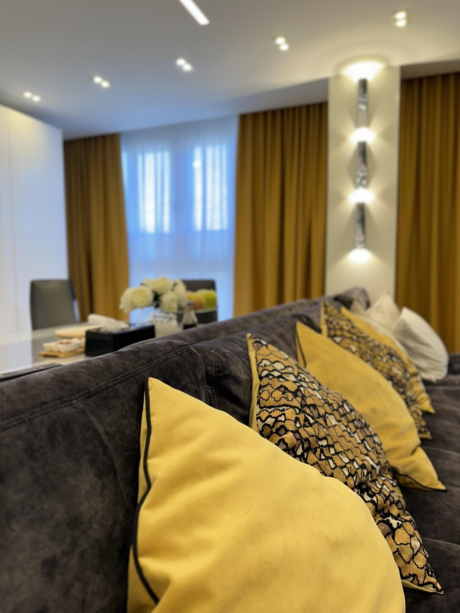
Мы работаем с каждым объектом лично: приезжаем на замеры, смотрим высоту потолков, расположение карнизов и то, как в комнату падает дневной свет. Часто клиенты приходят после попыток подобрать готовые шторы на маркетплейсах и видят, насколько точнее садится ткань, выбранная вживую.
Помимо штор, карнизов и солнцезащитных систем в салоне можно заказать постельное бельё по индивидуальным меркам из варёного хлопка и тенселя, декоративные подушки, а также подобрать обои, фрески и лепной декор в едином стиле.
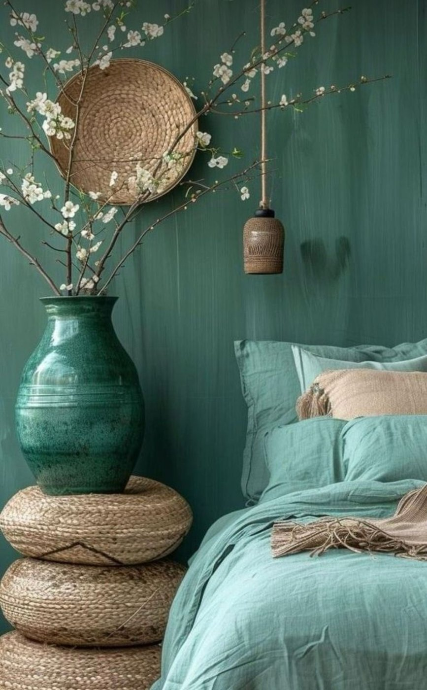
«Могу смело сказать, что салон лучший в Находке и пока даже во Владивостоке достойных найти не могу. Замеры и подборка тканей к интерьеру на высшем уровне»Елена Сорока, отзыв в 2ГИС
Реальные впечатления клиентов из Находки, которые оформляли с нами квартиры, дома и заказывали домашний текстиль
Изначально собиралась покупать готовые шторы и тюль на маркетплейсе, но решила пригласить Анастасию на замеры. Я не учла карнизы, которые поставили вместе с натяжным потолком. Анастасия объяснила, какой вид штор подойдёт под них. От совета по плотности ткани до финальной установки всё прошло замечательно.
Заказывала тюль и шторы в новую квартиру, осталась очень довольна. Благодарю Анастасию за прекрасную работу и высокое качество. Щепетильность, с которой вы подходите к своей работе, поражает, всё идеально.
Анастасия помогла подобрать ткани, учла все наши пожелания и предложила удачные решения, о которых мы сами бы не подумали. Шторы идеально вписались в интерьер и сделали дом ещё уютнее. Работа выполнена безупречно, аккуратно и в срок.
Получила свой комплект постельного белья Serenity home из варёного хлопка - очень нежный и уютный, его можно не утюжить. При заказе Анастасия учла все пожелания по размерам и дизайну. Отдельное спасибо за красивую упаковку и внимание к деталям.
Шикарный салон. От интерьера до дела. Обращалась неоднократно. Девочки знают подход к клиентам, а главное, как сделать атмосферу в доме ещё уютнее.
Спасибо большое, выбрали шторы-плиссе, получилось очень уютно и красиво. Быстрая установка и прекрасное обслуживание. Рекомендую.
Приезжайте в салон посмотреть ткани вживую или оставьте заявку на выезд дизайнера с каталогами
Оставьте номер телефона, и Анастасия свяжется с вами, чтобы согласовать удобный день и подобрать каталоги тканей